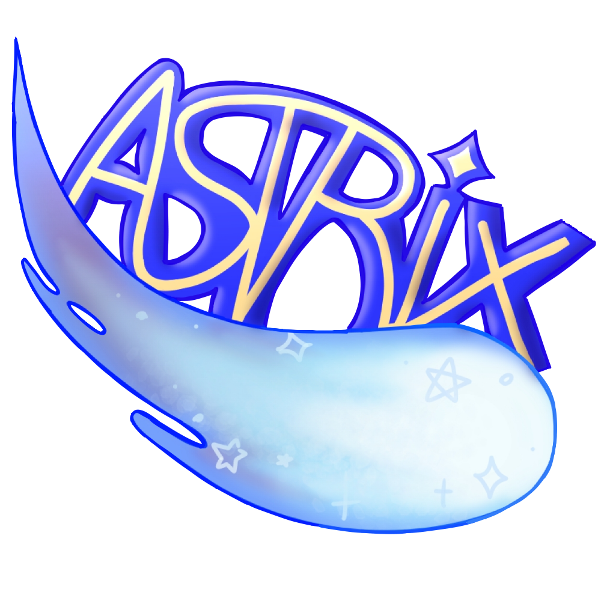

El proyecto de AstriXMC.
AstriXMC fue un proyecto dirigido por mí. En este proyecto hice un servidor de Minecraft en el cual,
la filosofía principal del mismo era la de crear lo que tú quieras, siempre y mientras no afecte directamente a los demás, a excepción de algunos casos.
Si querías hacer una granja grande, podías hacerla.
La premisa principal era esa. El servidor estaba basado en los clásicos servidores de Minecraft "SMP". Ahora bien, esto tuvo unos cambios, por ejemplo,
el hecho de que el propio servidor fuera una comunidad que apelaba a ser algo "semiabierto" al público.
El servidor tuvo sus resultados, sin duda. Gracias a ello, tengo pensado emprender un nuevo proyecto, ya sea relacionado o no con Minecraft en el que aborde ya de por sí
algunos problemas que existían en Minecraft y crear un modo de jugar más inmersivo y que dé "Más juego".
Los restos de AstriX siguen existiendo. Dando click en la imágen de la derecha, podrás acceder al Discord del servidor.
